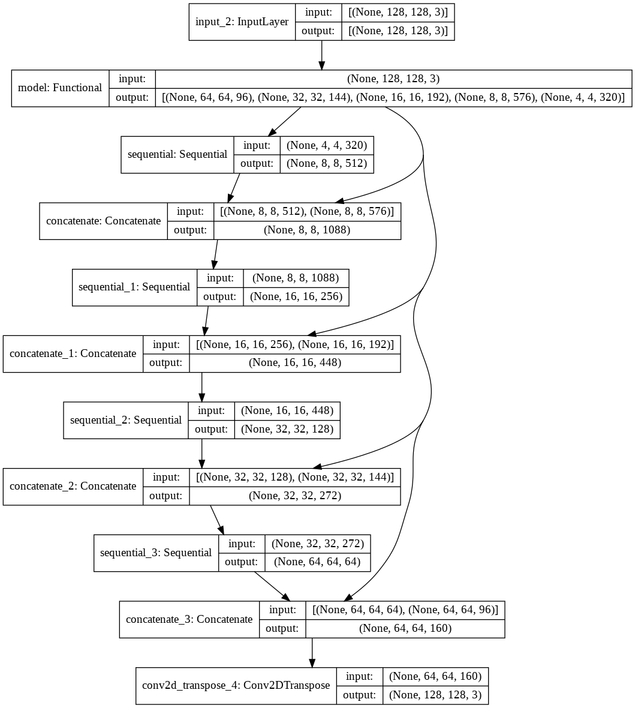

Projects
Disclaimer: This is a list of my notable projects! (In order of programs)Please look at my GitHub links below for the full list.
GitHub Repository ・ Website
Jam-Jam, is a website I made in Google Code Next's Team Edge program as it was my first website I made from scratch! Was made in a group of four using the two APIs (IMDB and
lyrics), as I was responsiblefor making the login page when launched and using the IMDB API to make selections based on user's needs. Coded in HTML/CSS and JavaScript!
(Made in Term 0 of Google Code Next Team Edge Program—under guidance
of Google Code Next Coaches: Alexandria Nelson, Nicholas Wilkins)
GitHub Repository
Pi Video Surveillance is a web app that uses a Raspberry Pi and its camera. The objective of the webapp is to detect movements from the user that is sitting infront of the Raspberry Pi camera. As it detects the motions, you would see a redbox that is wrapping where you are currently moving most as it has a timestamp of thesame color at the bottom of what the day is. In addition it displays a red heart with theSenseHat as it is a signal that tells us the web app is running and working. Webappwas sololy made and coded in Python with HTML touches!
(Made in Term 2 of Google Code Next Team Edge Program—under guidance
of Google Code Next Coaches: Alexandria Nelson, Kelly Bergeron, Nicholas Wilkins)
GitHub Repository
Pi Video Surveillance Extension is a project that uses a Raspberry Pi and its camera. Inwhich has the objective of the project is to detect who's in front of the
Raspberry Pi CameraAs it detects the authorized person, the Raspberry Pi's SenseHat will display a green (matcha) heart,emails the user, and logging to tell the user
that they should not worry. For unauthorized people,
a red heart will display on the SenseHat and will alert the user. Made in a group of
two and coded in Python
with HTML touches!
(Made in Term 3 of Google Code Next Team Edge Program—under guidance
of Google Code Next Coaches: Alexandria Nelson, Kelly Bergeron, Nicholas Wilkins)

GitHub Repository ・ Dataset
Histology Image Segmentation is an independent project that uses a Google Colab and imagesegmentation. In which has the objective to train
a model to be able to detect outlines of atypical
tissue in histology (images).
Our model would be creating a binary classification of "normal" and
"unnormal" tissue, so we would be able to quantify whether or not a
histology looked of interest.
Project was coded in Python.
(2020-2021: Independent Project of Google Code Next Team Edge Program—under guidance
of Google Software Engineer: Jamie Yu)
GitHub Repository
My DS Babel is a project that uses the Python language and its libraries. That has the objective of converting CSV to SQL and SQL to CSV.
(One of the projects of Qwasar Silicon Valley Preseason Data Science track—under guidance
of Mr. Gaetan Juvin and Mr. Josh Trujillo)
GitHub Repository
My NBA Analysis is a project that uses the Python language, its libraries, and Regex. Thathas the objective Create a nice array of hash which will sum everything based on the given datasets.
(Last project of Qwasar Silicon Valley Preseason Data Science track—under guidance
of Mr. Gaetan Juvin and Mr. Josh Trujillo)
TbinhCodeNext
This is my Code Next GitHub, where you can see projects that I've done with Google Code Next.
NguyenVoT22This is my main GitHub, where you can see even more projects that I've done.